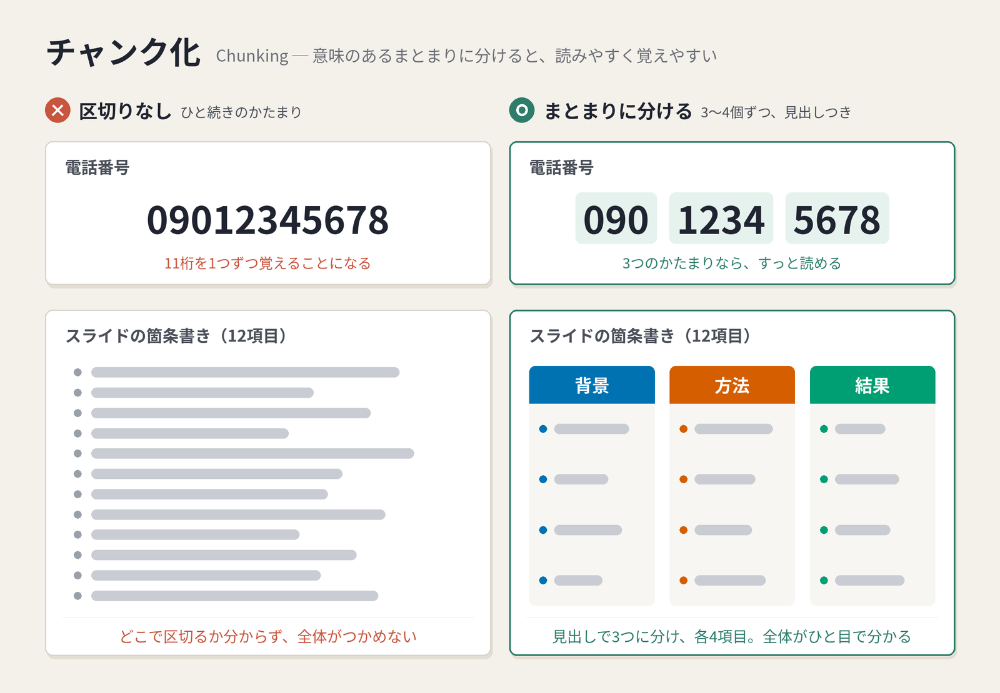

第14回
チャンク化
Chunking

どういう知識か
チャンク化は、ばらばらの情報を意味のあるまとまり（チャンク）に分けて見せることです。チャンクはもともと認知心理学の言葉で、記憶のなかでひとまとめに扱われる単位を指します。Nielsen Norman Group の Kate Moran は、内容を小さく区切って見せると、ざっと目を通しやすくなり、理解や記憶も助けると説明しています。
よく引かれるのが、ジョージ・ミラーの論文「The Magical Number Seven, Plus or Minus Two」（1956）です。人が短期記憶に保てるのはおよそ7チャンクという内容ですが、「人は7個までしか扱えない」という意味に誤解されがちです。同じ記事は、メニューは画面に出ていて覚えておく必要がないので、項目を7個に絞っても使いやすさは上がらない、と注意しています。
その後、ネルソン・コーワン（2001）は多くの研究を見直し、ミラーの7はおおまかな目安で、短期記憶の容量は平均して約4チャンク（3〜5）と結論づけました。数を守ることより、関係のあるものを意味でまとめることが大事です。
具体例
悪い例：電話番号を 09012345678 と続けて書く。11桁を1つずつ追うことになり、読み間違えやすくなります。スライドに箇条書きを12行並べるのも同じで、どこで区切ればよいか読み手にはわかりません。
良い例：090-1234-5678 のように、慣れた形で3つに区切ります。12項目は「背景」「方法」「結果」の見出しで3つに分け、それぞれ4項目ずつにします。研究サイトでも、ナビや本文を「研究」「業績」「プロフィール」のように意味で分け、見出しで区切ると、目的の場所を探しやすくなります。
今日から使えるひとこと
箇条書きが5行を超えたら、意味の近いものを3〜4個ずつのまとまりにして、それぞれに短い見出しをつけてみてください。
ただし「7個以内」を絶対のルールにはしません。画面に並んで見えているメニューなら、項目が多くても意味ごとに整理されていれば使えます。覚えてもらう必要があるものほど、小さく区切ります。
出典
- How Chunking Helps Content Processing https://www.nngroup.com/articles/chunking/ チャンクの定義、区切った電話番号は覚えやすく見渡しやすい、ミラーの7の誤用（メニューを7個に絞る必要はない）、見出し・太字・箇条書きで区切る
- The magical number seven, plus or minus two: Some limits on our capacity for processing information https://doi.org/10.1037/h0043158 Psychological Review, 63(2), 81–97。短期記憶の範囲はおよそ7チャンク
- The magical number 4 in short-term memory: A reconsideration of mental storage capacity https://doi.org/10.1017/S0140525X01003922 Behavioral and Brain Sciences, 24(1), 87–114。ミラーの7はおおまかな目安で、容量は平均約4チャンク（3〜5）